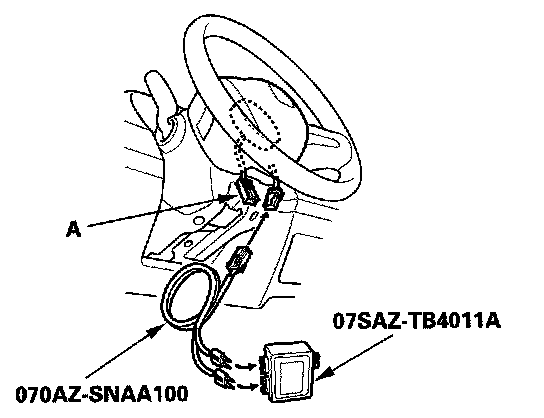
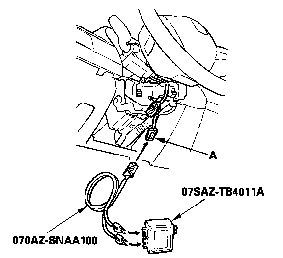
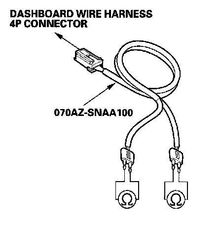

DTC 11-6x
DTC 11-3x ("x" can be 0 thru 9 or A thru F): Short to Another Wire or Decreased Resistance in Driver's Airbag First InflatorDTC 11-6x ("x" can be 0 thru 9 or A thru F): Short to Another Wire or Decreased Resistance in Driver's Airbag Second Inflator
Special Tools Required
- SRS inflator simulator 07SAZ-TB4011A
- SRS simulator lead J 070AZ-SNAA100
- SRS short canceller 070AZ-SAA0100
1. Erase the DTC memory.
2. Turn the ignition switch ON (II), and check that the SRS indicator comes on for about 6 seconds and then goes off.
Does the SRS indicator stay on, and is DTC 11-3x or 11-6x indicated?
YES - Go to step 3.
NO - Intermittent failure, system is OK at this time. Go to Troubleshooting Intermittent Failures. If another DTC is indicated, go to the DTC Troubleshooting Index.
3. Turn the ignition switch OFF. Disconnect the negative cable from the battery, and wait for 3 minutes.

4. Disconnect the driver's airbag 4P connector (A) from the cable reel.
5. Connect the SRS inflator simulator (2 ohms connectors) and simulator lead J to the cable reel.
6. Reconnect the negative cable to the battery.
7. Erase the DTC memory.
8. Read the DTC.
Is DTC 11-3x or 11-6x indicated?
YES - Go to step 9.
NO - Short in the driver's airbag first or second inflator; replace the driver's airbag.
9. Turn the ignition switch OFF. Disconnect the negative cable from the battery, and wait for 3 minutes.

10. Disconnect dashboard wire harness 4P connector (A) from the cable reel.
11. Connect the SRS inflator simulator (2 ohms connectors) and the simulator lead to the dashboard wire harness.
12. Reconnect the negative cable to the battery.
13. Erase the DTC memory.
14. Read the DTC.
Is DTC 11-3x or 11-6x indicated?
YES - Go to step 15.
NO - Short in the cable reel; replace the cable reel.
15. Turn the ignition switch OFF. Disconnect the negative cable from the battery, and wait for 3 minutes.
16. Disconnect SRS unit connector A (28P) from the SRS unit.
17. Disconnect the SRS inflator simulator from the SRS simulator lead. Do not disconnect the simulator lead from the dashboard wire harness 4P connector.
18. Connect a SRS short canceller (070AZ-SAA0100) to No.7 and No.8 terminals and No.1 and No.2 terminals of the SRS unit connector A (28P).

19. Check resistance between the terminals of both SRS simulator leads. There should be an open circuit or at least 1 Mohm.
Is the resistance as specified?
YES - Faulty SRS unit or poor connection at SRS unit connector A (28P) and the SRS unit. Check the connection between the connector and the SRS unit. If the connection is OK, replace the SRS unit.
NO - Short in the dashboard wire harness; replace dashboard wire harness.